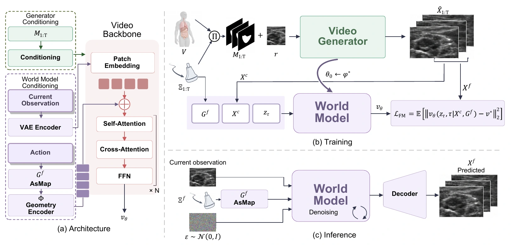
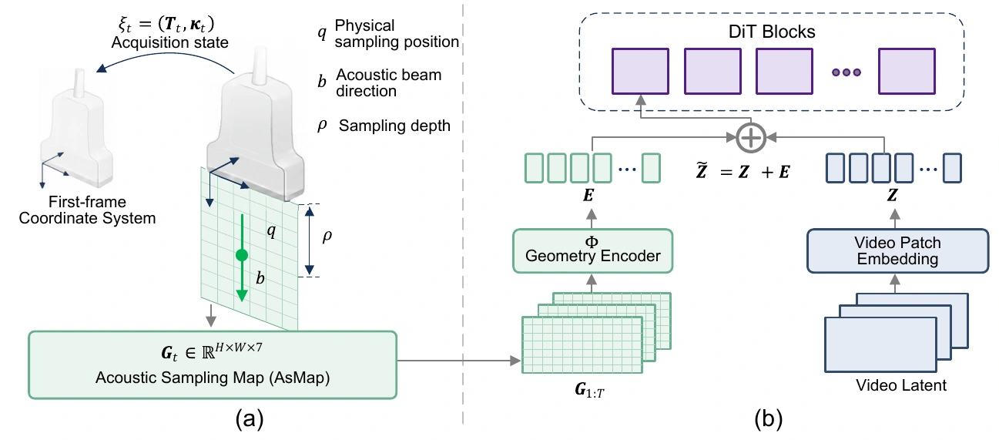
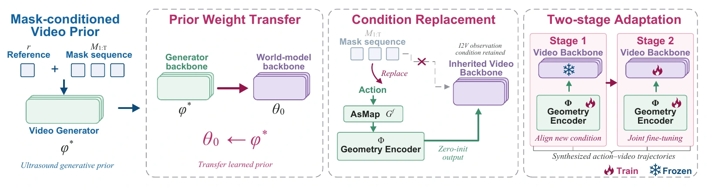
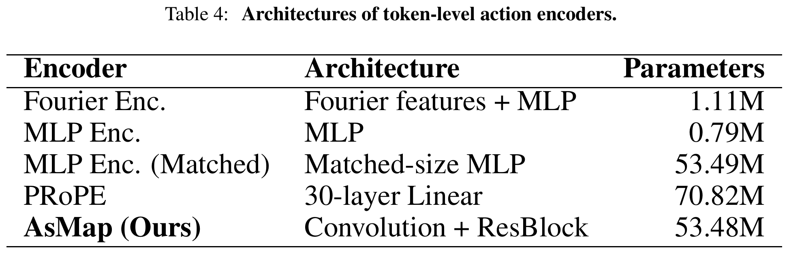
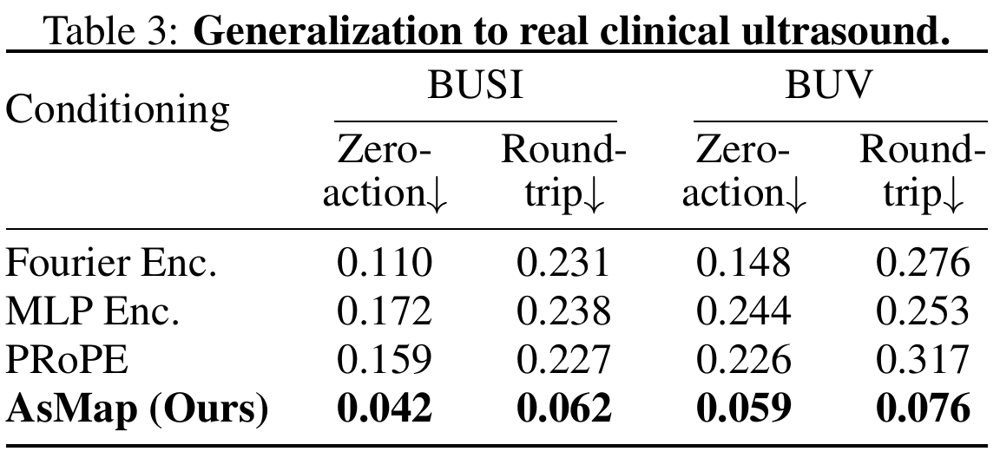
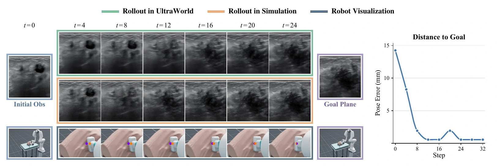

Ultrasound futures predicted by UltraWorld from an initial observation and a sequence of scanning actions.
Abstract
World models can enable autonomous ultrasound scanning by predicting the outcomes of probe motions from local observations. Learning this action–observation relationship typically relies on synchronized video–pose pairs, which are costly to collect at scale and largely unavailable in routine clinical recordings. Reliable action following further requires modeling ultrasound’s cross-sectional sampling geometry.
We present UltraWorld, a self-distillation recipe that transfers priors from clinical ultrasound videos into interactive world models without real action annotations. Starting from clinical videos, we adapt a video foundation model into an ultrasound generator conditioned on reference images and anatomical masks. Anatomical masks sampled along programmable trajectories through 3D anatomy provide spatial guidance for synthesizing action–video pairs. We then use these synthetic pairs to self-distill the generator into a world model that predicts future observations from local observations and actions, without requiring anatomical masks or other 3D assets at inference time. To further improve action following, we introduce the Acoustic Sampling Map (AsMap), which represents probe poses and imaging settings as pixel-wise 3D sampling positions, beam directions, and depths.
Experiments demonstrate improved prediction fidelity and action following. Across nine simulated closed-loop local planning episodes, UltraWorld reduces the mean final distance to the goal and orientation error by 29% and 38%, respectively, compared with visual servoing.
Overview

Acoustic Sampling Map

Self-distillation

Experiments
Slide
Rock
Sweep
Depth adjustment
Revisit
Quantitative comparisons

Analysis
Parameter comparison

Generalization to real clinical ultrasound

Unseen initial frames from patient-held-out BUV and independent BUSI evaluate zero-action stability and round-trip recovery consistency. These experiments do not use paired real future sequences.
Applications
Robotic Ultrasound Planning

BibTeX
@misc{yang2026ultraworld,
title={UltraWorld: Learning Interactive Ultrasound World Models
from Untracked Clinical Videos with Acoustic Sampling Map},
author={Yang, Keke and Wang, Erqi and Guan, Sainan and Ren, Hongliang},
year={2026},
note={Preprint. Under review.}
}Citation for the supplied preprint.